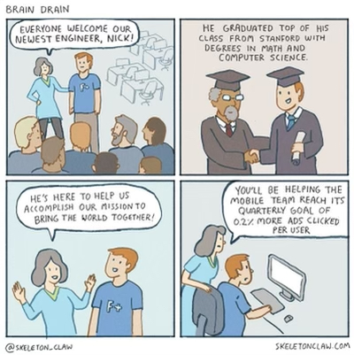

STEAM vs STEM: humanities are underrated
Posted: 12/30/2020
When I was a freshman at Rutgers, often other engineers would joke about art majors. They criticized them as how easy it must be. I found this very strange. Did they know art majors? What did these engineering students do in their free time? They watched Netflix. They played video games. They listened to music, who are literally called artists. People who write and produce: what did they study? Often humanities, the arts, design, literature, language or something of that nature (you can get this data by scraping linkedin btw p.s. they don’t like bots). Also what is easy and difficult is very relative to an individual. Sure you can argue some courses have exam styles or lesser work loads therefore those courses are easier. Generalizing difficulty to an entire major is that: a generalization. One person might find X subject super easy and another might find Y to be difficult (though I think everyone can agree organic chemistry is notoriously difficult wherever you are haha).
STEM stands for: science, technology, engineering and mathematics
STEAM stands for: science, technology, engineering, art, and mathematics
In 2001 the NSF introduced the acronym to encourage students to be competitive in the global economy to prepare students to enter the workforce. “Those areas were seen as being crucial to maintaining U.S. prosperity.” src So basically some people high up thought there will be a shortage of people with skills needed to fill jobs entering the workforce and as a result created STEM initiatives to encourage students to enter these disciplines. This as well students who are overwhelmingly under represented in those areas to enter those fields. This was an admirable effort from our government. However, there are some problems with this: wopo, wiki, theatl.
STEAM appears to me like a petty backhanded way to put humanities back in after an over emphasis on STEM. Like even the weight in the acronym is imbalance: 4 to 1.
Universities and colleges often have requirements that students must take elective courses outside of their major. This is especially true if the major you are in is a specialized program: business, engineering, pharmacy etc. Generally speaking, the purpose of this requirement is to expand a student's interest, knowledge, and understanding by taking courses in the humanities or subjects that one would otherwise not take. This requirement comes from the idea of a liberal education, which modern universities and colleges are based on. The idea being: “a philosophy of education that empowers individuals with broad knowledge and transferable skills, and a stronger sense of values, ethics, and civic engagement ... characterised by challenging encounters with important issues, and more a way of studying than a specific course or field of study" - AACU
I personally got into reading because I was forced to take a writing course where I was exposed to great non-fiction writing like that of Malcom Gladwell’s. Before that I did not like reading at all.
If the economy did not reward stem majors with prospects of jobs and INITIAL higher than average incomes etc. I would not be surprised if less students went into STEM majors.
If we take a look at industries like music, film, literature, design, are often actually more competitive to break into. Because you have to BREAK into them. Although the blacklist has tried to democratize this in Hollywood at least. In these industries the 80/20 principle is more skewed where it's more 98/2 where 98% of all value generated goes to just 2% of creators. I don't have the exact data but the general idea is that when it comes to those industries competition for the actual products that are consumed by people is fierce. As a result job prospects for those entering those fields are limited or tougher to get. Not all people who study humanities enter those industries and there are some STEM majors who make their way in too.
Recently, GTP3 was able to write a program given a doc string. Trained on source code from Github, this program was able to write a program…. Very meta. This leads me to my next point:
Mark Cuban says the majors of the future that will be most valuable are actually humanities majors. Because their main edge is creativity, thinking in a non systemic way. Systems thinking is very important for solving tough technical problems but given that AI can augment most of the hard technical tasks, what is the real value add for a human? With AI automating the mundane parts of work the real value add of anyone that is a knowledge worker is their creativity or doing things computers cannot do.
Elon Musk does not care about your college degree. More so, your ability to solve tough problems. He criticizes that there are too many MBAs and too many people going into investment banking/finance which is a misallocation of talent.
Chamath Palihapitiya, the outspoken investor at Social Capital called our generation’s Buffet, says that we have too much of the best talent going to big tech (FAANG + Microsoft) getting paid a ton of money where they end up not real world tough problems. This is highlighted well in this meme/comic (credit goes to creator):

Steve Jobs always said Apple is the intersection of technology and liberal arts. He said the most important course he took in college was calligraphy.
Tim Ferris suggests studying two unrelated things to be creative and see opportunities others do not (like com sci and law, swimming and language etc.) (can’t find the exact quote or podcast please send it my way if you find it).
If we are to create a society with well rounded people, who are empathic and thoughtful; Who can tackle problems that arise and step up challenges, the study of humanities is necessary. We are not robots. We are humans with conscience, emotions, thoughts, and relationships with the world outside.
Update 1/6/2020: College is good for: meeting people who share your interests (and not your interests), meeting interesting professors who might tell very well too, learning about things/subjects you have trouble learning yourself, researching something you would not be able to at home, using some equipment in a lab you would not have access to otherwise. Should everyone learn to code? Well just as everyone can read/write in English but not everyone is a writter by profession everyone should learn to read/write code though not everyone needs to be a swe/dev/coder by profession. I think this statement is too idealistic because everyone uses a car everday without understading the laws of therodynamics. Those who are facinated by how something works learn (degree or not). I think everyone should be required to take it as a course in high school becasue it is part of society now. Also it amazes me: there are plenty of people who are able to graduate high school without ever taking physics and/or chemistry?! In these subjects studnets learn the properties of the universe and how it works. It is totally shocking to me that is not required in some places!